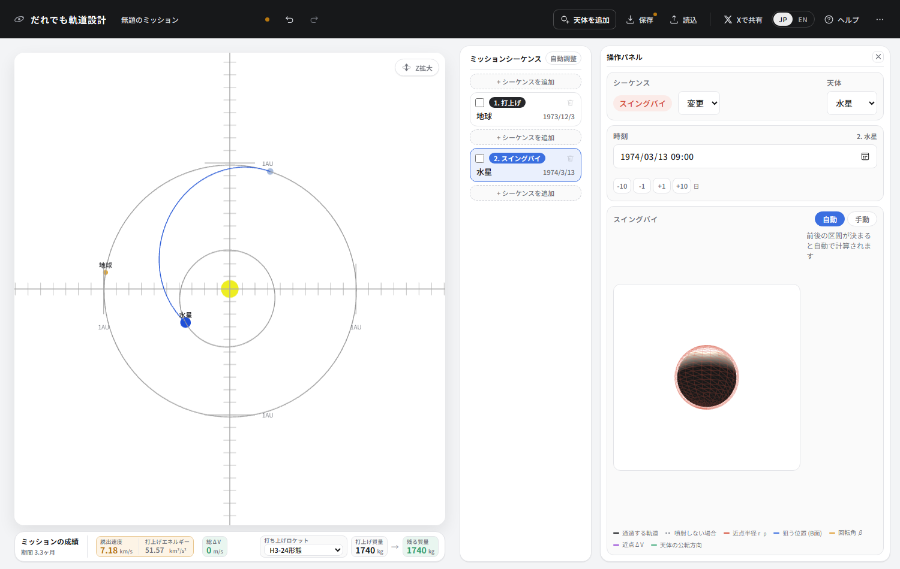
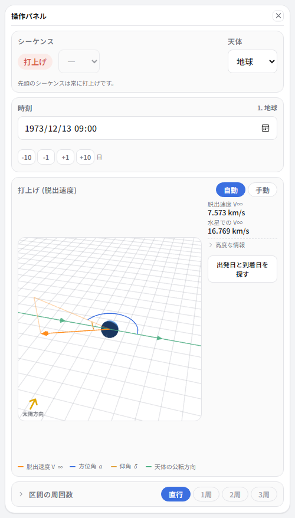
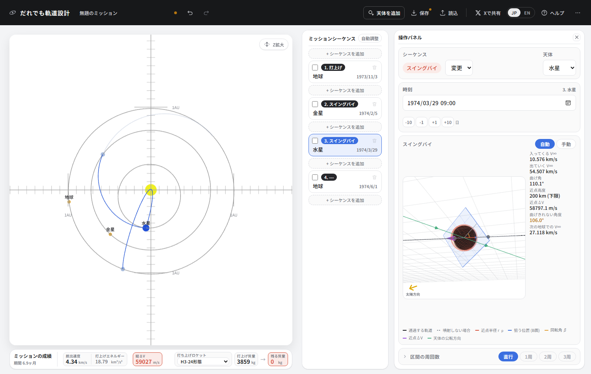
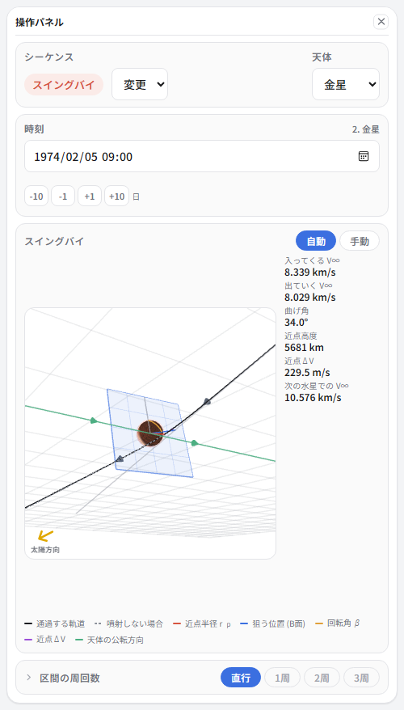
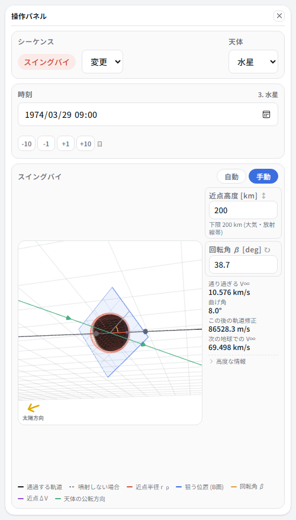
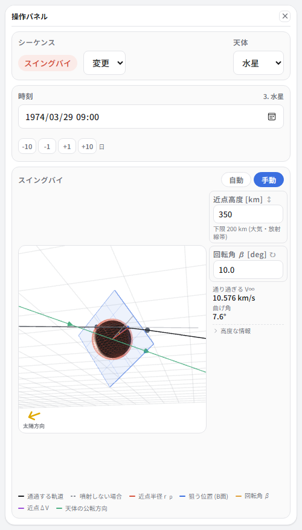
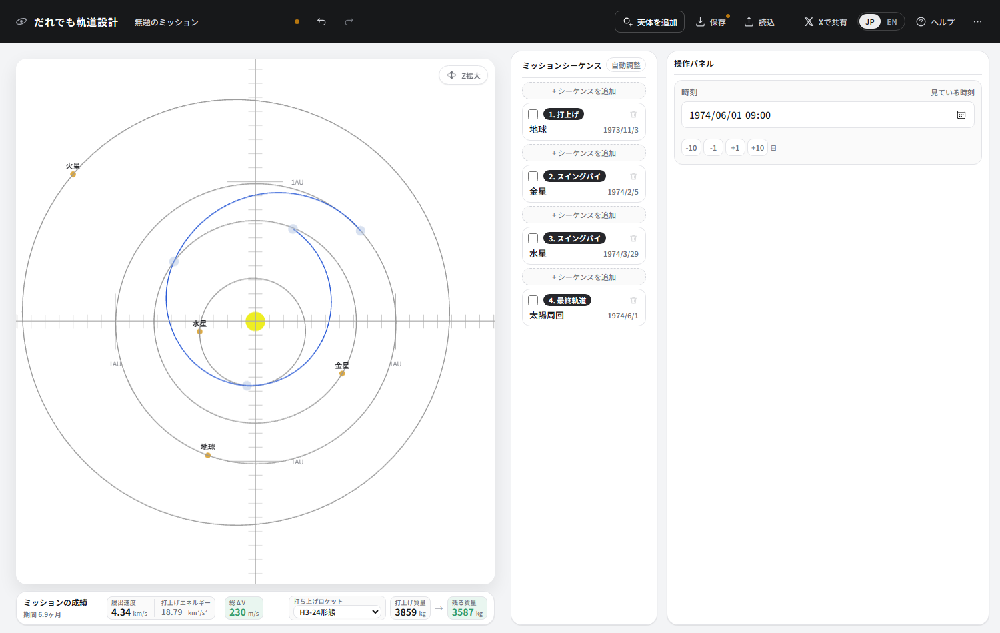

② To Mercury on Venus' gravity
Mariner 10, launched in 1973, was the first spacecraft to use a swingby. We will reproduce its trajectory with the real launch date, exactly as flown.
What you will learn here
- What happens if you do not use a swingby
- What a swingby actually does (turn angle and periapsis altitude)
- Why the inner planets are the hard ones to reach
- Deciding the orbit after a swingby yourself (manual mode)
- The resonance that meets Mercury three times
First, go without Venus
What a swingby is worth shows best when you put it beside the case without one. So let us first draw a trajectory straight from Earth to Mercury. As with Mariner 10, we will only pass by Mercury (make the second sequence a swingby at Mercury and it is treated as a pass).
Move the dates around and look for the easiest spot. The bottom is around leaving on 3 December 1973 and arriving 100 days later.


You can get there. But it costs you twice over.
- A launch energy of 51.57 km²/s² — over five times the trip to Mars (9.30), dropping the launchable mass to 1556 kg.
- You pass Mercury at 19.2 km/s. You get an instant to observe. And at that speed there is no prospect of staying near Mercury at all.
Venus' gravity fixes both.
Building it with Venus in between
-
Start again with four sequences, and set the top three like this.
No. Type Body Date 1 Launch Earth 1973/11/03 2 Swingby Venus 1974/02/05 3 Swingby Mercury 1974/03/29 4 (we make this a final orbit later) — 1974/06/01 Every one of those is Mariner 10's real date.

Earth → Venus → Mercury, falling inward and inward again.
Reading the swingby

Select the second sequence and you see what is happening close to Venus. The figure looks at Venus head-on, and the blue plane is where the spacecraft is aiming (the B-plane).
| Incoming V∞ | 8.339 km/s | How fast you come in, as seen from Venus |
| Outgoing V∞ | 8.029 km/s | How fast you leave |
| Turn angle | 34.0° | How far gravity bent the direction of travel |
| Periapsis altitude | 5681 km | The lowest altitude reached |
| Periapsis ΔV | 229.5 m/s | The burn making up what gravity alone could not bend |
This is the point of a swingby. As seen from Venus, the speed barely changed (8.339 → 8.029, the difference being the 229 m/s burned at periapsis). What changed is the direction. But Venus itself is moving around the Sun at 35 km/s, so as seen from the Sun, merely changing direction has changed the velocity a great deal. Without spending fuel.
How that works, and which bodies used which way actually help, are collected in Swingbys, part 1.
Lower the periapsis altitude and the turn angle grows. Want a deeper bend? Pass closer. There is a floor, though — the atmosphere and radiation belts — and it stops there. If the readout “Bend gravity cannot supply” appears, that is the sign gravity alone is not enough, and the periapsis ΔV is the burn covering the shortfall.
Where you arrive next is settled before you get there
At the bottom of the readouts is “Next V∞ at Mercury 10.576 km/s”. How fast you arrive at Mercury is already decided by how you fly before you get there. So it matters to watch that number while you are still building the leg toward it, not only once you open the swingby sequence. That is why it appears on launch, burn and leg sequences alike.
What to do after Mercury
Now the real work. Select the third sequence (the swingby at Mercury) and switch it to Manual.

Auto mode works backwards from “make sure it arrives at the next destination”, so it needs a destination. Here, with nothing chosen beyond Mercury, it is more natural to decide how to pass through yourself. Switching to manual attaches a burn sequence (a maneuver) behind it, but that disappears in the next step.
-
Select the bottom sequence and set its type to Final orbit. The maneuver that came along disappears.
“Final orbit” is a sequence that ends without a destination. The orbit you reached is itself the result. -
Go back to the Mercury sequence and set periapsis altitude 350 km and rotation angle β 10 degrees.

Periapsis altitude 350 km, β 10 degrees. It passes through with no burn (periapsis ΔV 0). -
Select the final-orbit sequence and look at the heliocentric orbit you ended up on.
Perihelion 0.456 AU, aphelion 0.773 AU, period 0.48 years.
That number, 0.48 years
Mercury's period is 88 days = 0.241 years. The orbit we ended up on takes 0.48 years = 176 days — exactly two of Mercury's.
What that means: when the spacecraft comes round once, Mercury has gone round twice and is back in the same place. So you meet Mercury again. Without spending a drop of fuel.
Mariner 10 did exactly this. First encounter March 1974, second September, third March 1975. One spacecraft, three close approaches to Mercury, photographing 45% of the surface. The Italian mathematician Giuseppe Colombo found this resonance, and his name lives on in today's BepiColombo mission.
What Venus bought us
The same “fly past Mercury” mission, with the stop at Venus as the only difference.
| Direct to Mercury | Via Venus | |
|---|---|---|
| Launch | 1973/12/03 | 1973/11/03 |
| Launch energy C3 | 51.57 km²/s² | 18.79 km²/s² |
| Mass an H3 can launch | 1556 kg | 3859 kg |
| Speed arriving at Mercury | 19.2 km/s | 10.6 km/s |
| ΔV the spacecraft burns | 0 m/s | 230 m/s |
| Time taken | 3.3 months | 4.8 months |
One pass by Venus multiplied the launchable mass by 2.5 and nearly halved the speed of arrival at Mercury. All it cost was the step of calling at Venus, and a month and a half.
The arrival speed is what tells later. A trajectory that comes in at 19.2 km/s leaves no room even to think about staying at Mercury. Entering orbit at 10.6 km/s is still a heavy purchase (try changing the last sequence to “Orbit insertion” and see), but it is a speed from which a next move is visible. Indeed, the spacecraft that orbit Mercury go on to shave their speed further over many more swingbys.
The finished article

| Item | This design | The real Mariner 10 |
|---|---|---|
| Launch | 1973/11/03 | 1973/11/03 |
| Launch energy C3 | 18.79 km²/s² | about 17 |
| Venus swingby | 1974/02/05 | 1974/02/05 |
| Periapsis altitude at Venus | 5681 km | 5768 km |
| Speed arriving at Mercury | 10.576 km/s | about 11 km/s |
| Mercury swingby | 1974/03/29 | 1974/03/29 |
| Period afterwards | 176 days | 176 days |